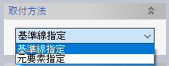
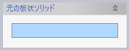
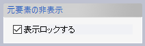
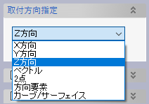

ウォール
ウォール
取付線（平面図での線）や元板を指定して壁（板）を作成します。
コルゲートを含む壁（板）を作成することができます。

操作方法
取付線などのパラメータを入力すると作成形状がプレビュー表示されます。形状の確認後、OKボタンで実行します。
パラメータ
- 取付方法
ウォールの取付方法を選択します。

- 基準線指定
取付線となる基準線と取付方向や板逃などを指定して作成します。 - 元要素指定
板状のソリッド要素を元要素として指定して、その形状にコルゲートを追加したものを新規ウォールとして作成します。板厚や板逃は元要素から引き継がれます。
- 基準線指定
- 基準線（基準線指定）

スケッチ、スケッチ線、スケッチレイヤーで指定します。折れ線はナックルとして処理します。
- 板厚（基準線指定）

板逃方向（＋側、−側、両側）、板厚、モールド位置を設定します。
コルゲートを設定した場合はコルゲートのタイプ設定に含まれる板厚を使用しますので、ここで設定する板厚は無視されます。
- 元の板状ソリッド（元要素指定）

板状のソリッド要素を指定します。押し出し、境界指定および条材コマンドで作成したソリッドが利用できます。
利用できるソリッド要素にはいくつか制限がありますが、いずれも「平面上の開いた曲線を厚みを付けて平面と垂直な方向に押し出した形状」である必要があります。
- 元要素の非表示（元要素指定）

ウォール作成後、元要素は自動的に非表示になりますが、さらに非表示状態でロックするかどうかを指定します。
- コルゲート位置
- コルゲート反転

コルゲートの向きを反転します。
- コルゲート設定
コルゲート位置は基準直線の両端からの距離、もしくはコルゲート位置の点要素で設定します。コルゲートの形状はそれぞれの指定位置でタイプを選択します（複数の設定点で異なるコルゲートのタイプも指定できます。その場合でも、板厚は同じでなければなりません）。


- 追加
クリックしてコルゲート位置をリストに追加します。下の選択リストで点が選択されている場合は点基準の位置を、そうでない場合は起点からの位置基準のコルゲート位置を追加します。
- 削除
リストで選択されているコルゲート位置を削除します。
- 基準
1、2はそれぞれコルゲートの起点位置（端部1、端部2）を表します。文字をクリックすると基準を変更（選択）できます。
- 位置
起点からの距離を指定します。文字をクリックすると値を修正することができます。
- タイプ
文字をクリックすると図のようにコルゲートのタイプ選択ダイアログが表示されます。OKボタンで決定です。
- 追加
- コルゲート反転
- 取付方向指定（基準線指定）
コルゲートを押し出す方向（順方向、反対方向、両方向、２方向）と量を指定します。


押し出し量は長さ指定のほか"サーフェイスまで"と"点まで"で指定することができます。
- 取付方向指定（元要素指定）
コルゲートを押し出す方向を指定します。元要素として選んだ板状ソリッドから取付方向が取得できない場合に（例：境界指定ソリッド）、この方向が参照されます。

- 境界要素 端部１、端部２（オプション）
壁面の端部境界となる要素（フェイス、シート、平面）を選択します。